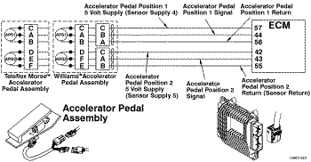
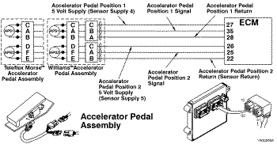
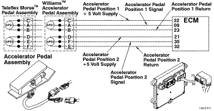

Cdigo de Falha 1242
|
| CDIGO | RAZO | EFEITO |
| Cdigo de Falha:1242 PID:P091 SPN:91 FMI:2/2 LMPADA:Vermelha SRT: |
Circuito dos Sensores 1 e 2 de Posio do Pedal ou Alavanca do Acelerador - Dados Invlidos, Intermitentes ou Incorretos. Os sensores nmero 1 e nmero 2 de posio do acelerador esto lendo valores diferentes. |
O motor funcionar somente em marcha lenta. |
|
 ISF2.8 CM2220 E/ISF2.8 CM2220 AN/ISF3.8 CM2220 AN - Circuito dos Sensores 1 e 2 de Posio do Pedal ou da Alavanca do Acelerador
|
|
 ISB4.5, ISB6.7, ISD4.5 e ISD6.7 CM2150 SN/ISL8.9 CM2150 SN/ISZ13 CM2150 - Circuito dos Sensores 1 e 2 de Posio do Pedal ou da Alavanca do Acelerador
|
|
 ISM11 CM876 SN - Circuito dos Sensores 1 e 2 de Posio do Pedal ou da Alavanca do Acelerador
|
O sensor da posio do acelerador um sensor de efeito Hall acoplado ao pedal do acelerador. O sensor da posio do acelerador varia a voltagem do sinal para o mdulo eletrnico de controle (ECM) quando o pedal do acelerador pressionado e liberado. O ECM recebe uma voltagem baixa do sinal quando a leitura da posio do pedal do acelerador 0%. O ECM recebe uma voltagem alta do sinal quando a leitura da posio do pedal do acelerador 100%. O circuito da posio do pedal do acelerador contm uma fonte de alimentao de 5 volts, um retorno e um sinal da posio do pedal do acelerador.
O pedal do acelerador contm dois sensores de posio. Esses sensores de posio so usados para medir a posio do acelerador. Os dois sensores de posio recebem uma alimentao de 5 volts do ECM. Uma voltagem do sinal correspondente baseada na posio do pedal do acelerador ento enviada pelo ECM. A voltagem do sinal para a posio 1 do acelerador o dobro da voltagem do sinal para a posio 2 do acelerador.
O sensor da posio do pedal do acelerador est localizado no pedal do acelerador.
Este diagnstico executado continuamente quando a chave de ignio encontra-se na posio ON.
O ECM detecta que as leituras entre os sensores 1 e 2 de posio do pedal do acelerador diferem em mais de 2 por cento.
Motores mais novos usam dois sensores de posio do acelerador para determinar a posio do acelerador. Os pedais em motores mais antigos utilizam um nico sensor de posio do acelerador e um interruptor de validao da marcha lenta. Se os Cdigos de Falha 132 e 1241 forem ativados quando o pedal do acelerador estiver na posio de marcha lenta, e o Cdigo de Falha 132 for desativado e o Cdigo de Falha 1239 for ativado quando o acelerador for pressionado, isso ser uma indicao de que o pedal incorreto foi instalado no veculo. Um pedal de acelerador com dois sensores de posio deve ser instalado.
Este cdigo de falha torna-se ativo quando os sensores 1 e 2 de posio do pedal do acelerador no esto lendo o mesmo valor.
As possveis causas desta falha so: